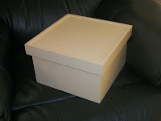
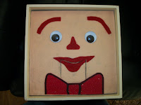
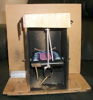

Barry the Box
9/23/2010
{kind=link}

From Geoffrey Moran (Australia){kind=link}

Here are some photos of my self-built pal which is obviously a copy of your Christmas Box idea (thank you!). I built my pal (Barry the Box) about 3 years ago.The outside box was kindly built by my Father-In-Law with dovetailed corners! (Previously I used an appropriate si
{kind=link}

zed cardboard "gift box".)The internal workings and final finish were my work (with the face pretty much a copy of your Christmas Box). The internal workings are separate from the box and can be slipped in or out of the box if repairs are needed. As you can see the outside box looks pretty ordinary - so when left sitting around no one guesses what it is.
{kind=link}
However, sometimes I have wrapped it in Christmas paper, placed it under a Christmas Tree and then brought it out at the appropriate moment. (It could be wrapped in birthday paper if required.) I have also added a thumb hole on the left side of the outside of the box at the front. This allows me to put my thumb through the hole giving me more grip on the puppet.
My right hand at the rear controls the mouth movement. The internal workings are from scraps of timber and wire axles from coat hangers (as you can see my skills are pretty rough), but all works well and shows that even someone with limited skill can make a very nice puppet!